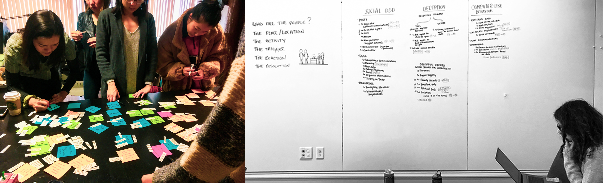

Social voice agents like Alexa, Google home, and other voice assistants are becoming increasingly involved in our everyday lives- pushing the boundaries of power, presence, and influence. Though this emerging technology can bring us the benefits of every ease, how far can we push changes in privacy, surveillance, and human capabilities?
Spring Semester 2019
In collaboration with Professors John Zimmerman and Jodi Forlizzi, Ph.D. candidate Michal Luria, Rebecca Zhang, Krystal Tung, Chen Ni, Annie Huang, Rachel Alexander, and Bennett Huffman
Conducted speed dating interviews with over 20 scenarios to families in homes
Synthesis and analysis paper
22 storyboards
16 in-home interviews
Unexpected insights
This research aims to uncover the boundaries between human and robots, particularly a social voice agent in a multi-person home. We were not trying to find what the agent can do, but rather understand human attitude towards these agents and their role in the future.
We posed questions like: Can your child ask Alexa for help with their homework? Can your sister or brother ask Google Home to lie for you?
Our creation of our agents are more future-forward, allowing us to pose questions on security, privacy, and surveillance. Ultimately, our findings will be published and used for future researchers and developers of voice agents.
We did a quick brainstorming session to come up with several scenarios in which voice agents could exisit. We individually came up with scenarios of families interacting with a social agent around the themes that we generated.
After the exercise, we decided to focus on the following 4 themes to guide our research:
The Agent can take action without activation. Can the Agent tell us that we need to eat better? Can it tell us we are misbehaving?
The Agent controls access and action. Is there a hierarchy in access to private information? Can the Agent censor information from others?
The Agent can lie and deceive a user at the request of another. Should they be allowed to be deceitful to protect someone? Do they have a moral compass? Where do their loyalties lie?
The Agent can take on a role in Dull, Dirty, Dangerous social interactions as the user. Should we allow them to communicate on our behalf? Help us conversate with people in our lives?
We broke into smaller groups to hone in on our scenarios and pick the narratives that were provocative. With my group, we gathered scenarios of the categories of Permission, Social DDD, Deception. We drew up our storyboards and as a whole team, we generated 22 well-defined storyboards.
Recruiting was extremely difficult since our target research participants were 2-parent households with children 12 years or older. We wanted this demographic specifically in order to better understand how an agent can function in a family home. We were lucky enough to gather 16 interviews with families in the Pittsburgh area.
Each family we interviewed took around 2 hours and we interviewed about 20 families. We probed and asked questions to get to the root of their thoughts and feelings on the storyboards.
After a hefty period of transcribing each interview, we selected key quotes that would help us with a thorough analysis. As we read each quote, we continued to categorize popular opinions and strong feelings in an affinity diagramming exercise.
Recruiting was extremely difficult since our target research participants were 2-parent households with children 12 years or older. We wanted this demographic specifically in order to better understand how an agent can function in a family home. We were lucky enough to gather 16 interviews with families in the Pittsburgh area.
Each family we interviewed took around 2 hours and we interviewed about 20 families. We probed and asked questions to get to the root of their thoughts and feelings on the storyboards.
Parents particularly enjoyed the idea for the Agent to manage the household more seamlessly, allowing the agent to be able to transfer messages, to delegate tasks, or to figure our scheduling for family activities.
In some situations, participants appreciated the agent’s involvement in difficult interactions and its ability to bridge between people. For example, asking for help, resolving sibling conflict, support an argument with evidence or for softening some unpleasant interactions.
People specifically did not like when the agent was there to make social judgements: critique their lifestyle choices or giving any parenting advice.
I’m so grateful for the opportunity to work with such an amazing team on such a thoughtful and intriguing project. I really enjoyed learning about voice agents and how people react to situation they might be in, in the future. I’ve always had a curiosity in how humans and robots interact, since I myself is an avid use of Alexa. Through learning new research methods and interviewing folks outside of my school bubble, I feel as though this project helped me grow a more holistic point of view, in human- computer interaction.
If I were to continue this study, I would actually conduct another round of interviews but with live prototyping. Perhaps someone could act and speak what a voice agent would say, and this might bring a whole new perspective and insights in an environment that simulates it.